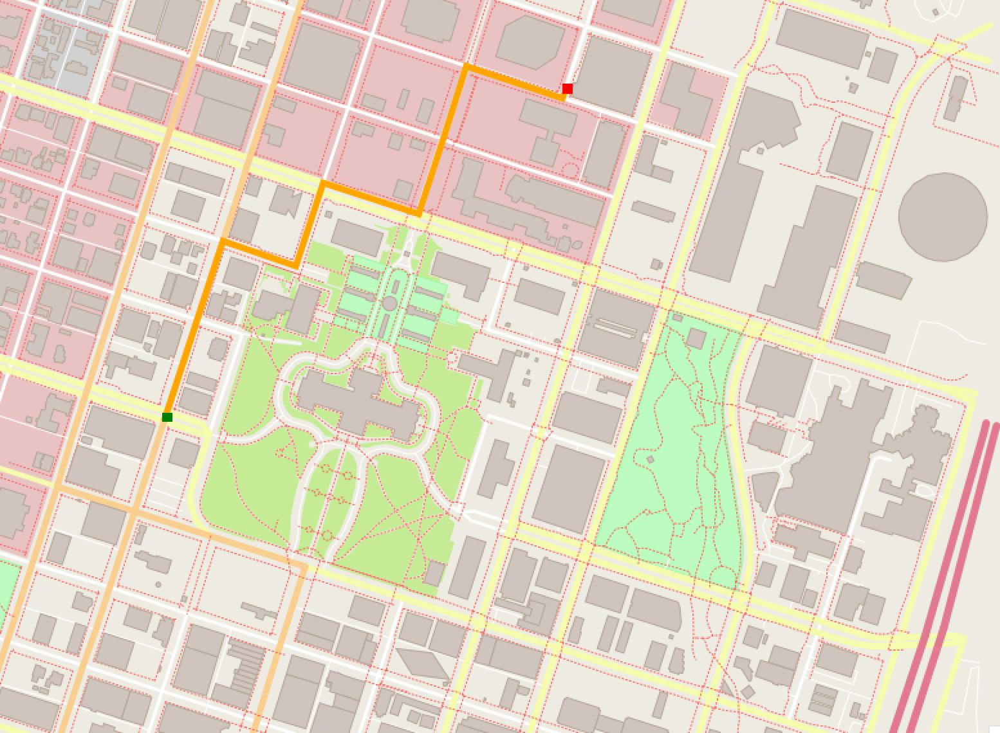

Route Planner
Summary
The A* Search Route Planner is a pathfinding project that applies the A* algorithm on real-world OpenStreetMap data to determine the shortest route between two points and visually represent it using the IO2D library.
Introduction
The A* Search Route Planner is a project I undertook to implement a pathfinding algorithm on real-world map data. It uses data from OpenStreetMap, represented through various data structures, and then applies the A* search algorithm to find the shortest path between two points on the map.
Technologies used
- A* Algorithm: core pathfinding logic that drives the route planning
- OpenStreetMap (OSM) Data: source of real-world map data on which the route planner operates
- IO2D Library: graphics library utilized for rendering and visualizing the map data, including the calculated routes.
- C++: the programming language in which the route planner and its associated functionalities are written
- Class Inheritance: this object-oriented programming concept was used to extend the Model and Node data structures for specialized functionalities.
- Vector Data Structures: used to hold information about nodes, paths, and other essential route planning details.
Structure
- Model class (
model.h,model.cpp):- designed to represent a geographical map parsed from XML data
- contains structures to represent different geographical elements like nodes (points), ways (paths), roads, railways, and various polygonal structures (like buildings and waters)
- RouteModel class (
route_model.h,route_model.cpp):- specialized data structure designed to store and represent the map in a format conducive to routing operations
- its constructor takes in an XML representation of the map and parses it into its internal structures
- saves nodes associated with roads in a hashmap data structure for efficient lookup
- contains nested class
Nodewhich represents single points in the map, and whose member variables store: a pointer to its parent (default is null),h_value(distance to end node),g_value(cost from start node), a bool variablevisited, and a vector of pointers to its neighbors
- RoutePlanner class (
route_planner.h,route_planner.cpp):- responsible for planning the route using the A* search algorithm
- its constructor takes in a reference to a RouteModel object, as well as starting and ending coordinates
- from the start node, it adds its neighboring nodes to the open list, calculates their heuristic value (
h_value), chooses the next node on the path based on its combined cost (g_value+h_value), and finally constructs the final path once the end node is reached
-
Render class (
render.h,render.cpp):- provides visualization functionalities for the geographical data within the route model using
io2dgraphics library - its constructor takes in a RouteModel object and calls helper functions responsible for mapping different road types (motorway, footway, primary, etc.) and land-use types (construction, grass, forest, etc.) to their respective pretedermined visual representation details (RGB, metrics, etc.)
- contains the function
Display()which is eventually called by main (after the A* search algorithm executes), taking as input aio2d::output_surfaceobject – the canvas on which the graphics will be drawn –, and will ultimately show the final planned route
- provides visualization functionalities for the geographical data within the route model using
Code flow
At a high-level, that is the flow of the main() function:
%%{
init: {
'theme': 'base',
'fontSize': '26px',
'wrap': 'true',
'width': '210',
'themeVariables': {
'fontFamily': 'Source Code Pro',
'actorBkg': '#1f3466',
'actorTextColor': '#fff',
'labelBoxBkgColor': '#1f3466',
'actorBorder': '#7eb2e3'
}
}
}%%
sequenceDiagram
participant Main as Main
participant FileReader as ReadFile
participant RP as RoutePlanner
participant Model as RouteModel
participant RenderFunc as Render
participant Display as io2d::surface
Main->>FileReader: Call ReadFile with .osm file
FileReader->>Main: Return osm data
Main->>Main: Get coords from user
Main->>Model: Create model = RouteModel(osm data)
Main->>RP: Create planner = RoutePlanner(model, start, end)
RP->>Main: Call planner.AStarSearch()
Main->>Main: Print distance
Main->>RenderFunc: Create render = Render(model)
Main->>Display: Setup io2d::output_surface
Display->>RenderFunc: render.Display(surface)
Display-->>Main: Show rendering
- Initialization: with the
osm_data_fileas the argument, themainfunction calls theReadFilefunction, which returns the osm data - User input: the
mainfunction prompts and gathers the starting and ending coordinates from the user - Model building: a
RouteModelobject is instantiated using the acquired osm data - Route planning: a
RoutePlannerobject is instantiated with the start and end coordinates, with which it performs the A* search and outputs the distance of the planned route - Rendering process: a
Renderobject is created using the instantiated model, after which theio2d::output_surfaceis instantiated in a variable named display. The display object calls the Display method on the Render object to visualize the results. Once the rendering is done, it returns control back tomain.
The A* algorithm
Overview
A* is a widely-used pathfinding and graph traversal algorithm that finds the shortest path from a starting node to a goal node in a weighted graph.
It combines the benefits of Dijkstra's algorithm – which guarantees the shortest path by exploring all possible paths in order of increasing distance from the start, and the heuristic-driven approach of Greedy Best-First Search – which estimates the cost to reach the goal and explores paths that seem promising.
A* uses a heuristic function to prioritize nodes based on their estimated cost to reach the goal (h-value) in combination with the actual cost to reach the current node (g-value). This dual approach ensures that A* is both optimal (it finds the shortest path) and efficient (it examines fewer nodes than Dijkstra's algorithm by using the heuristic). The algorithm continues evaluating paths until the goal is reached or if there are no more nodes to explore, indicating that no path exists.
Code sample
This is the A* search algorithm implementation used in this project:
void RoutePlanner::AStarSearch() {
RouteModel::Node *current_node = nullptr;
start_node->visited = true;
open_list.push_back(start_node);
while (open_list.size() > 0) {
current_node = NextNode();
if (current_node.distance(end_node)==0) {
m_Model.path = ConstructFinalPath(current_node);
return;
}
AddNeighbors(current_node);
}
}
These are the sequence of steps taken by the algorithm, reflected in a sequence diagram you can find below:
- Initialization:
- Set the starting node's cost-to-start (
g_value) to 0. - Calculate the heuristic estimate (
h_value) from the starting node to the goal. - Mark the starting node as "visited" and add it to an "open list" (list of nodes to be evaluated).
- Set the starting node's cost-to-start (
- Main Loop (while the open list is not empty):
- Find the node with the lowest combined cost (
f_value = g_value + h_value) from the open list. This is the "current node." - Remove the current node from the open list.
- Check if the current node is the goal node.
- If yes, reconstruct the path from the start to the goal by backtracking from the goal node using parent pointers. Then, terminate the algorithm.
- Otherwise, for each of the current node's neighbors:
- If the neighbor has not been visited:
- Set its parent to the current node.
- Calculate its
g_value(cost from the start node to this node). - Calculate its
h_value(heuristic estimate to the goal). - Mark the neighbor as visited and add it to the open list.
- If the neighbor has not been visited:
- Find the node with the lowest combined cost (
- Termination:
- If the open list is empty and the goal has not been reached, a path does not exist.
- Otherwise, if a path has been reconstructed, that path is the shortest path from the start to the goal.
%%{
init: {
'theme': 'base',
'fontSize': '12px',
'themeVariables': {
'fontFamily': 'Source Code Pro',
'actorBkg': '#1f3466',
'actorTextColor': '#fff',
'labelBoxBkgColor': '#1f3466',
'actorBorder': '#7eb2e3'
}
}
}%%
sequenceDiagram
participant RP as RoutePlanner
participant Node as RouteModel::Node
RP->>RP: AStarSearch()
RP->>Node: Mark start_node as visited
RP->>RP: Push start_node to open_list
loop until open_list is empty
RP->>RP: NextNode()
RP->>RP: Sort open_list by f_value
RP-->>RP: Pop and return lowest f_value node
RP->>RP: Check if current_node is end_node
alt current_node is end_node
RP->>RP: ConstructFinalPath(current_node)
RP->>RP: Create path_found vector and calculate distance
RP-->>RP: Return from AStarSearch (path found)
else
RP->>RP: AddNeighbors(current_node)
RP->>Node: FindNeighbors()
loop for each neighbor
RP->>RP: CalculateHValue(node)
Node-->>RP: distance to end_node
RP->>RP: Calculate g_value
Node->>RP: distance(*current_node)
RP->>RP: Push neighbor to open_list
RP->>Node: Mark node as visited
end
end
end
Demo
You can find the code repository here, along with a list of its dependencies and instructions as to cloning, compiling and running the project.
The user can specify a map file with the -f option followed by the filename
$ [executable] [-f filename.osm]If the user runs the program without any arguments, the program will use a default OSM data file.
$ ./OSM_A_star_search
Reading OpenStreetMap data from the following file: ../map.osmOnce the project has been compiled and ran, the user is prompted by the console to input the x and y coordinates for the start and end nodes, ranging from 0 to 100. The (0,0) coordinate is the bottom-left corner of the map.
Running the program with random coordinates for start (23,43) and end (90, 89) on the default map file generates the following output:
Enter start_x: 23
Enter start_y: 43
Enter end_x: 90
Enter end_y: 89
Distance: 673.586 meters.And the image with the planned route from start (green dot) to end (red dot) is rendered on the screen:

Conclusion
This project was a modest but fruitful opportunity to further my understanding of the C++, and to solidify the concepts and implementation details related to the A* algorithm. It also underlined how powerful integrating tools such as the IO2D library and OpenStreetMap data can be.